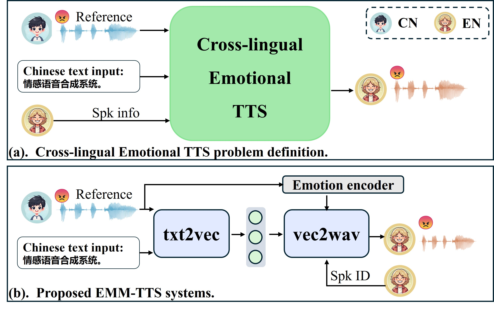

Cross-lingual Emotion TTS  English speech result: Input Text: 是的真是名副其实。 Method (Intral-Lingual) Target CN Speaker Biaobei Your browser does not support the audio element. (Cross-Lingual) Target EN Speaker LJSpeech Your browser does not support the audio element. Neutral Angry Happy Sad Surprise Neutral Angry Happy Sad Surprise M3 Your browser does not support the audio element. Your browser does not support the audio element. Your browser does not support the audio element. Your browser does not support the audio element. Your browser does not support the audio element. Your browser does not support the audio element. Your browser does not support the audio element. Your browser does not support the audio element. Your browser does not support the audio element. Your browser does not support the audio element. DiCLET-TTS Your browser does not support the audio element. Your browser does not support the audio element. Your browser does not support the audio element. Your browser does not support the audio element. Your browser does not support the audio element. Your browser does not support the audio element. Your browser does not support the audio element. Your browser does not support the audio element. Your browser does not support the audio element. Your browser does not support the audio element. EMM-TTS Your browser does not support the audio element. Your browser does not support the audio element. Your browser does not support the audio element. Your browser does not support the audio element. Your browser does not support the audio element. Your browser does not support the audio element. Your browser does not support the audio element. Your browser does not support the audio element. Your browser does not support the audio element. Your browser does not support the audio element. Reference speech Your browser does not support the audio element. Your browser does not support the audio element. Your browser does not support the audio element. Your browser does not support the audio element. Your browser does not support the audio element. Chinese speech result: Input Text: What do you think of this question? Method (Cross-Lingual) Target CN Speaker Your browser does not support the audio element. (Intral-Lingual) Target EN Speaker Your browser does not support the audio element. Neutral Angry Happy Sad Surprise Neutral Angry Happy Sad Surprise M3 Your browser does not support the audio element. Your browser does not support the audio element. Your browser does not support the audio element. Your browser does not support the audio element. Your browser does not support the audio element. Your browser does not support the audio element. Your browser does not support the audio element. Your browser does not support the audio element. Your browser does not support the audio element. Your browser does not support the audio element. DiCLET-TTS Your browser does not support the audio element. Your browser does not support the audio element. Your browser does not support the audio element. Your browser does not support the audio element. Your browser does not support the audio element. Your browser does not support the audio element. Your browser does not support the audio element. Your browser does not support the audio element. Your browser does not support the audio element. Your browser does not support the audio element. EMM-TTS Your browser does not support the audio element. Your browser does not support the audio element. Your browser does not support the audio element. Your browser does not support the audio element. Your browser does not support the audio element. Your browser does not support the audio element. Your browser does not support the audio element. Your browser does not support the audio element. Your browser does not support the audio element. Your browser does not support the audio element. Reference speech Your browser does not support the audio element. Your browser does not support the audio element. Your browser does not support the audio element. Your browser does not support the audio element. Your browser does not support the audio element.